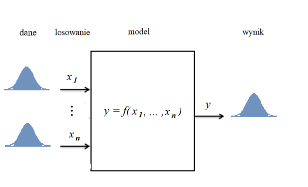
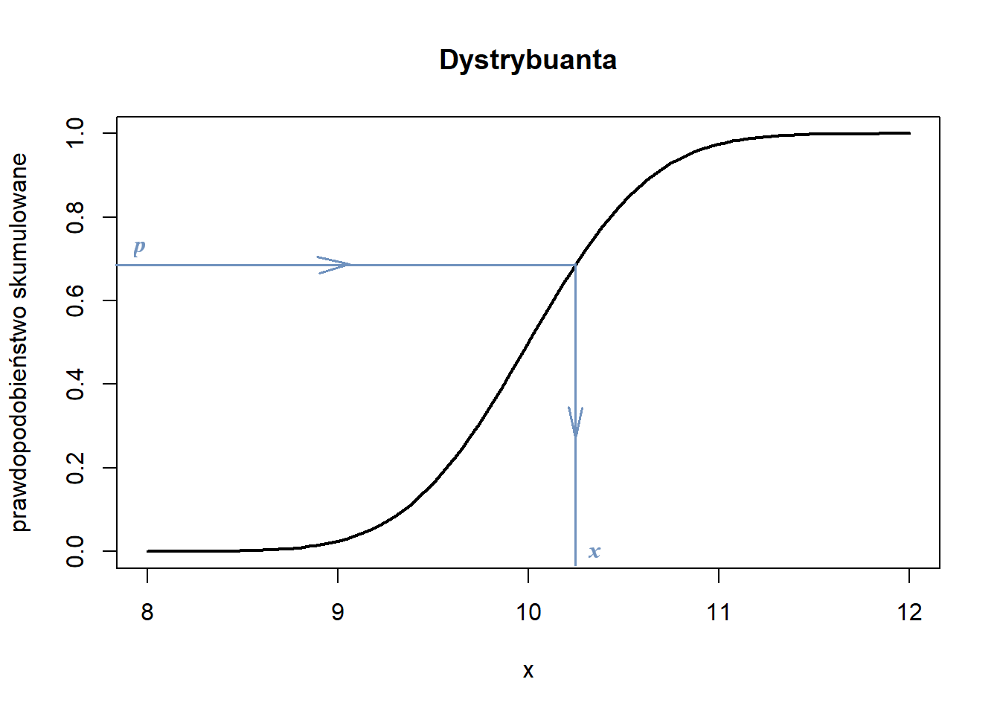

Symulacja Monte Carlo to metoda używana do przewidywania prawdopodobieństwa wyniku, gdy występuje zmienność danych. Zmienność danych może być opisana w różny sposób. Najczęściej wykorzystuje się metody statystyczne i w przypadku, gdy dana wielkość posiada rozkład normalny, jego zmienność opisuje wartość średnia i odchylenie standardowe.
Eksperyment Monte Carlo polega na losowaniu dużej liczby danych z założonego zakresu zmienności poszczególnej wielkości modelowej. Następnie wykorzystuje się je do wygenerowania dużej liczby odpowiedzi modelu i w rezultacie, do oceny uzyskanego rozkładu wyników metodami statystycznymi.
Idea metody Monte Carlo została naszkicowana na poniższym rysunku dla bardzo prostego modelu opisanego zwykłą funkcją kilku zmiennych niezależnych \(x_i\). W przedstawionym przykładzie założono dla uproszczenia, że rozkład każdej z nich jest zgodny z rozkładem Gaussa.

Szkic metody Monte Carlo
Schemat losowania danych jest następujący:
z pomocą generatora liczb losowych losuje się prawdopodobieństwo \(p\) dla każdej danej wejściowej \(x_i\),
następnie z pomocą funkcji odwrotnej skumulowanego rozkładu Gaussa wyznacza się bieżącą wartość danej \(x_i\). Poniższy rysunek ilustruje ten proces.

Schemat losowania wartości \(x_i\)
Funkcje
Model
Model opisany jest funkcją trzech zmiennych niezależnych \(x_1, x_2, x_3\):
\(y = a + b \: sin(x_1) + c\: x_2^2 + d \: ln(x_3)\),
gdzie \(a,\: b,\: c\) i \(d\) są stałymi parametrami.
Skrypt:
import numpy as npimport matplotlib.pyplot as pltfrom scipy.stats import norm, ks_2samp, shapiroimport math# modeldef funkcja_model(param, x): a = param[0] b = param[1] c = param[2] d = param[3]# model y = a + b*math.sin(x[0]) + c * (x[1] **2) +d * math.log(x[2])return y
Wykresy
Funkcja ‘wykresy’ kreśli histogram, rozkład gęstości prawdopodobieństwa i dystrybuantę każdej danej. Dla uproszczenia założono rozkłady normalne.
Funkcja realizująca eksperyment Monte Carlo. Parametry formalne: n - liczba zmiennych \(x_i\), nn - liczba losowań, x - wartości średnie danych, sd - ich odchylenia standardowe, parametry - parametry funkcji opisującej model. Funkcja wykorzystuje generator liczb losowych i funkcję odwrotną dystrybuanty.
Skrypt:
def monte_carlo(n, nn, x, sd, parametry): np.random.seed(7) y = np.zeros(nn)for i inrange(nn): los_x = np.zeros(n)for j inrange(n): los_x[j] = norm.ppf(np.random.rand(), x[j], sd[j]) y[i] = funkcja_model(parametry, los_x)return y
Figure 5: Wizualne sprawdzenie normalności rozkładu y
Sprawdzanie normalności rozkładu y
Wynik \(y\) liczy sobie 100 000 elementów, więc do oceny normalności jego rozkładu zastosowano test Kołmogorowa-Smirnowa.
Skrypt:
# test Kołmogorowa-Smirnowaksx = ks_2samp(y, np.random.normal(y_av, sd_y, len(y)))ksxp = ksx.pvalueprint("prawdopodobieństwo p_value = ", round(ksx.pvalue,4))if ksxp <0.05:print("\nWedług testu Kołmogorowa-Smirnowa rozkład wielkości y nie jest normalny,\nponieważ prawdopodobieństwo błędnego zanegowania jego normalności \np_value jest < 0.05. ")else:print("Według testu Kołmogorowa-Smirnowa rozkład wielkości y jest normalny (nie da się zaprzeczyć normalności rozkładu)\n\n")# test Shapiro-Wilkaif nn <=5000: swx = shapiro(y)print(swx) swxp = swx.pvalueif swxp <0.05:print("Według testu Shapiro-Wilka rozkład wielkości y nie jest normalny\n\n")else:print("Według testu Shapiro-Wilka rozkład wielkości y jest normalny (nie da się zaprzeczyć normalności rozkładu)\n\n")
prawdopodobieństwo p_value = 0.004
Według testu Kołmogorowa-Smirnowa rozkład wielkości y nie jest normalny,
ponieważ prawdopodobieństwo błędnego zanegowania jego normalności
p_value jest < 0.05.
Rozkład y
Figure 6 przedstawia uzyskany rozkład gęstości prawdopodobieństwa \(y\) i jego dystrybuantę.
Wszystkie dane wejściowe \(x_1,\: x_2\) i \(x_3\) były zgodne z rozkładem Gaussa. Rozkład wielkości wynikowej \(y\) lekko odstaje od rozkładu normalnego. Skośność rozkładu jest niewielka. Mediana prawie pokrywa się z wartością średnią. Kurtoza jest lekko dodatnia, co oznacza, że rozkład jest nieco bardziej smukły niż normalny. Rozbieżności od rozkładu normalnego występują w zkresie “ogonów’ rozkładu, co wyraźnie widać z wykresu Q-Q na rys. Figure 5. Wyniki są nieco bardziej skupione wokół wartości średniej niż w rozkładzie Gaussa.
Zmienność danych \(x_1,\: x_2\) i \(x_3\) sprawia, że wynik działania modelu z 95% pewnością znajdzie się w zakresie od 596.13 do 771.98., czyli \(y = 682.4_{-86.3}^{+89.6}\).